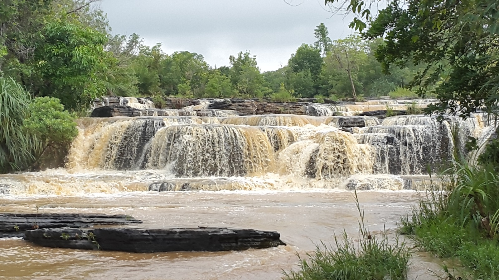
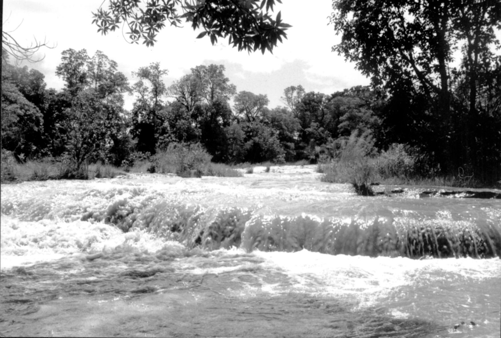
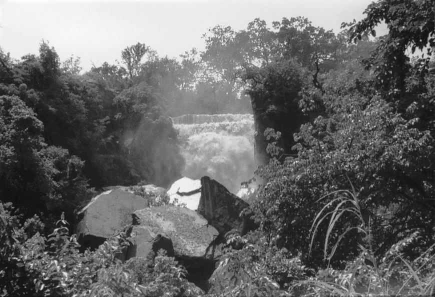

Bienvenue sur la page: Cascades de Banfora

Les Cascades de Karfiguéla sont le joyau de la région des Hauts-Bassins. Elles se situent à 12 km de Banfora, sur la route de Bobo-Dioulasso. L’eau dévale sur plusieurs paliers de grès vieux de 1,4 milliard d’années. En saison des pluies, le débit est puissant et impressionnant. En saison sèche, plusieurs petits filets d’eau sculptent la roche. C’est un lieu de baignade très fréquenté par les locaux et touristes. Le bruit de l’eau et la fraîcheur offrent une pause immédiate. Les bassins naturels sont peu profonds, idéals pour se détendre. La végétation autour reste verte toute l’année grâce à l’humidité. C’est l’arrêt incontournable de tout voyage à Banfora.

La légende Sénoufo raconte que les cascades sont gardées par des génies. Ces génies protègent l’eau et punissent ceux qui la polluent. On dit qu’il faut demander la permission avant de se baigner. Les anciens viennent encore faire des offrandes au pied des chutes. Cette croyance explique pourquoi le site est resté si propre. Le respect de la nature fait partie de la culture locale. Les guides du village racontent ces histoires aux visiteurs. Chaque roche et chaque bassin a son nom et son histoire. Le lieu dépasse le simple paysage : c’est un site spirituel. Visiter Karfiguéla, c’est écouter la mémoire de l’eau.

Sur le plan pratique, le site est aménagé pour les visiteurs. Un parking, des buvettes et des vendeurs d’artisanat sont présents. Des sentiers permettent de monter jusqu’au sommet des chutes. Depuis en haut, la vue sur la plaine de cannes à sucre est magnifique. Des guides locaux proposent des visites pour 1000 à 2000 FCFA. Ils connaissent les meilleurs bassins pour nager en sécurité. Attention aux roches glissantes, des sandales sont conseillées. Le meilleur moment est tôt le matin ou fin d’après-midi. La lumière est douce et il y a moins de monde. Le coucher de soleil derrière les cascades est spectaculaire.

La biodiversité autour des cascades est très riche. Des singes patas et des babouins viennent boire au bord de l’eau. De nombreuses espèces d’oiseaux nichent dans les arbres. On observe des martins-pêcheurs, des hérons et des guêpiers. La forêt-galerie abrite aussi des colobes et des antilopes. Les papillons colorés sont partout en saison des pluies. Cette faune dépend directement de l’eau des cascades. La chaîne des cascades crée un microclimat unique. La température est toujours plus fraîche qu’à Banfora ville. C’est un véritable refuge pour la vie sauvage.

Pour tes photos, Karfiguéla offre des angles incroyables. De face, on capture toute la largeur des chutes en cascade. De profil, on joue avec les paliers et la mousse verte. Sous la cascade, l’effet "rideau d’eau" est magique. Utilise un temps d’exposition long pour l’effet soyeux. Protège ton appareil des éclaboussures, l’air est humide. Le matin, la brume crée un halo autour des roches. Le soir, le soleil réchauffe la pierre en orange. Chaque photo raconte un moment différent de la cascade. Karfiguéla ne se visite pas, elle se ressent.

En gros c'est merveilleux ,relaxant, il y fait bon vivre.

C'est Beau!!!